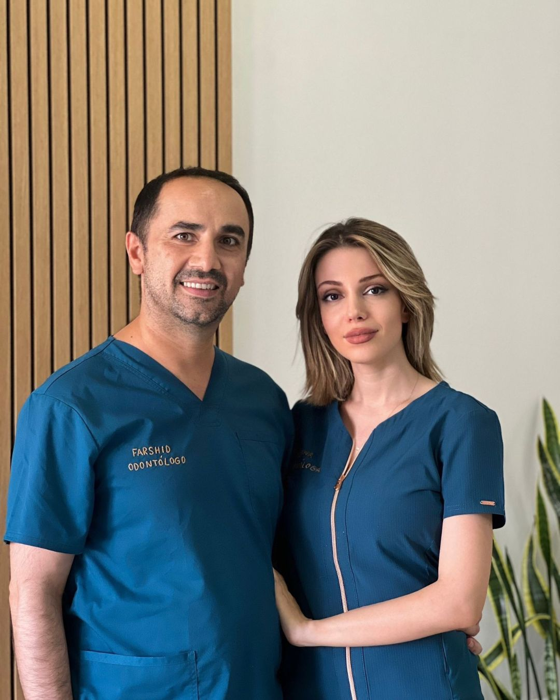

Ortodoncia invisible
Alinea tu sonrisa sin que nadie lo note, con seguimiento digital 3D en cada cita.
DescubrirPrimera consulta y diagnóstico digital 3D — gratis este mes
Clínica Dental SIRO lleva 25 años cuidando sonrisas en Navalcarnero y Barrio del Pilar. Esta es la propuesta de una experiencia digital a la altura de ese cuidado: diagnóstico 3D, ortodoncia invisible SureSmile® y estética dental sin franquicias ni frialdad.
Salud bucal proyectada tras tu plan personalizado
Años de experiencia
Sonrisas transformadas
Valoración media
Tiempo medio de espera
Desde la primera limpieza hasta la sonrisa de tus sueños, cada tratamiento está diseñado alrededor de ti, con tecnología digital y un equipo que te acompaña en cada paso.
Alinea tu sonrisa sin que nadie lo note, con seguimiento digital 3D en cada cita.
DescubrirHasta varios tonos más blancos en una sola sesión, con protocolo de baja sensibilidad.
DescubrirDiseño de sonrisa digital: verás el resultado antes de empezar el tratamiento.
DescubrirCirugía guiada por ordenador para una precisión milimétrica y cicatrización más rápida.
DescubrirLa primera visita al dentista, convertida en una experiencia divertida y sin miedo.
DescubrirEstética facial para realzar tu sonrisa dentro del conjunto de tu rostro.
Descubrir
No somos una franquicia más. Somos un equipo pequeño, cercano y obsesionado con los detalles — desde el trato cercano en cada visita hasta el seguimiento digital de tu tratamiento. 25 años en Navalcarnero y más de 10 en Barrio del Pilar avalan esa forma de trabajar.
Elige el horario que mejor te venga en menos de un minuto.
Escaneamos tu sonrisa y diseñamos tu plan a medida, sin compromiso.
Ejecutamos el plan con seguimiento digital en cada visita.
Disfruta del resultado — y del mantenimiento sin complicaciones.
25 años en Navalcarnero y más de 10 en Barrio del Pilar. Ven a visitarnos o resuelve tu duda por teléfono o WhatsApp.
Sí. Incluye diagnóstico digital 3D, valoración clínica y propuesta de tratamiento sin ningún compromiso.
Sí, adaptamos cada plan de pago a tu situación, con cuotas desde 0% de interés según el tratamiento.
De media entre 6 y 12 meses, dependiendo de tu caso. Lo verás reflejado en tu simulación 3D desde el primer día.
Sí, disponemos de agenda prioritaria para urgencias dentro de las 24 horas siguientes a tu llamada.
Escríbenos, llámanos o pásate a tomar un café. Estamos deseando conocerte.